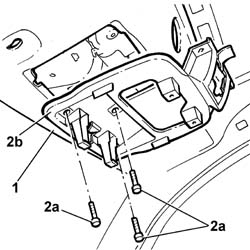

7040E56 Support for front MODULAR COURTESY LIGHT UNIT - R.R. with courtesy light removed
- Path
- Procedures > 70 FITTINGS > 7040 BODY INTERIOR UPHOLSTERY AND TRIM > 7040E PASSENGER COMPARTMENT COURTESY LIGHTS > 7040E56 Support for front MODULAR COURTESY LIGHT UNIT - R.R. with courtesy light removed
- Kind
- repair procedure (removal / refitting; the operation number is the code)
- Applies to
- all engines; all production periods
- Interactive page
- https://sloeber94.github.io/elrnDB-lThss/en/#/126614
Applies to: all engines; all production periods
 Removing
Removing
 Refitting
Refitting- Disconnect the negative battery terminal.
See in Op. 7030B64 Sun roof control SWITCH - R.R.
See in Op. 7040H30 FRONT PILLAR TRIM (one), left or right - R.R.
See in Op. 7065C30 interior l/h or r/h grab handle (one) - r+r
See in Op. 7065C34 SUN VISOR (one) left or right - R.R.
See in Op. 7030B34 Sun roof housing DECORATIVE TRIM - R.R.
- Release the left and right front side door housing seal, as necessary.
1. Gently lower the roof lining.
2. Undo the bolts (2a) and remove the support (2b).

Applies to: all engines; all production periods
Refitting
Removing- Fit the support in place and secure it using the bolts.
- Reposition the roof lining and the left and right front side door housing seal.
See in Op. 7030B34 Sun roof housing DECORATIVE TRIM - R.R.
See in Op. 7065C34 SUN VISOR (one) left or right - R.R.
See in Op. 7065C30 interior l/h or r/h grab handle (one) - r+r
See in Op. 7040H30 FRONT PILLAR TRIM (one), left or right - R.R.
See in Op. 7030B64 Sun roof control SWITCH - R.R.
- Connect the negative battery terminal.
Topics linked from this page (5)
- 7030B34 Sun roof housing DECORATIVE TRIM - R.R.
- 7030B64 Sun roof control SWITCH - R.R.
- 7040H30 FRONT PILLAR TRIM (one), left or right - R.R.
- 7065C30 interior l/h or r/h grab handle (one) - r+r
- 7065C34 SUN VISOR (one) left or right - R.R.